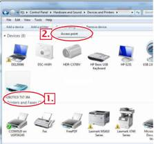

שלב 2 – הדלקת וחיבור בקר ה-TXT למחשב
הבעיה: הבקר אינו נדלק
הפתרון: עקוב אחר השלבים הבאים לפתרון הבעיה, בדוק אם הבקר נדלק לאחר כל שלב בבדיקה:
א. ודא שלחצת לחיצה ארוכה של כ-3 שניות על כפתור ה: ON/OFF לשם הדלקת הבקר
ב. ודא שהבקר מחובר היטב לבטריה באמצעות החוט, יתכן שמגע רופף גרם ליציאת מחבר מאחת הכניסות. החיבור עלול להיות רופף אם אחד המחברים קיבל מכה ו"נסגר", ניתן להרחיב את המחבר באמצעות נעיצת המברג במרכזו
ג. ודא שכניסת ה: + בבקר מחוברת לכניסת ה: + בבטריה, וכך גם כניסות ה: -
ד. נסה להשתמש בחוט חליפי כדי לודא שלא מדובר בבעיה פיסית בחוט
ה. ודא שהבטריה טעונה ואינה ריקה. אם הינה טעונה נסה להשתמש בבטריה אחרת
הבעיה: איני מצליח לחבר את הבקר למחשב עם כבל
USB
הפתרון: עקוב אחרי הפתרון ל
בעית זיהוי הבקר על ידי המחשב
הבעיה: איני מצליח לחבר את הבקר לרשת ה-
WiFi /
BlueTooth
הפתרון: עליך לעקוב אחר הוראות ההתקנה הנמצאות בלינקים המתאימים שבתיאור שלב
2 בהוראות ההתקנה באתר המלווה למורה. בסיום התהליך עליך לכבות ולהדליק את הבקר ולנסות שוב
הבעיה: איני מצליח לראות את הבקר מהמחשב ברשימת המכשירים תומכי ה-WiFi / BlueTooth
הפתרון: ודא שהתקשורת שאתה מעוניין להתחבר בה פועלת בבקר. ניתן לכבות את תקשורת ה-WiFi / BlueTooth בבקר בלחיצה על הכפתור המתאים בתפריט ה-Network, ודא שהכפתור לא נלחץ בטעות והתקשורת אכן פועלת
הבעיה: עקבתי אחרי ההוראות ועדין איני מצליח להתחבר לרשת ה-BlueTooth
הפתרון: ייתכן שהנך משתמש ב-Dongle לתקשורת BlueTooth שלא תומך בטווחים של הבקר – נסה להשתמש בדונגל חליפי לבדיקת התקשורת
הבעיה: הצלחתי כבר להתחבר דרך BlueTooth בהצלחה אבל כעת איני מצליח להתחבר
הפתרון: יש להריץ את השלב האחרון מהוראות החיבור בכל פעם שמדליקים מחדש את הבקר:

הבעיה: רשת ה-WiFi מופיעה כמה פעמים ברשימת הרשתות ואיני יודע מה לבחור
הפתרון: יש כמה מופעים לרשת במקרה שיש מספר Access Points לרשת – ודא שבחרת את הראשונה, ורק אם התקלה חוזרת נסה להתחבר לשאר המופעים
הבעיה: איני מצליח לקבל כתובת IP ברשת של בית הספר
הפתרון: אם זמן ההמתנה בשלב איתחול הרשת הוא ארוך – תהליך אימות הסיסמא מתבצע ונכשל, יש לוודא שהסיסמא הוקלדה כמו שצריך
אם האיתחול מיידי ללא זמן המתנה הבקר לא מצא מולו בדיקת סיסמא ויש לודא שלרשת שנבחרה אכן הוגדרה סיסמא, והתחברת למופע המתאים אם יש מספר מופעים לאותה הרשת ברשימה